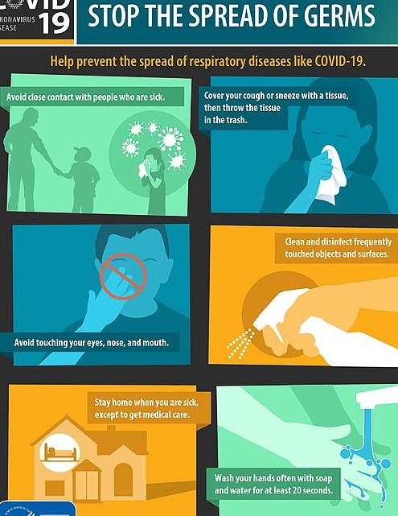
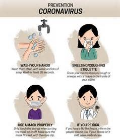

PREVENTION OF CORONAVIRUS
::
PREVENTION OF CORONAVIRUS
::Strategies for preventing transmission of the disease include maintaining overall good personal hygiene, washing hands, avoiding touching the eyes, nose, or mouth with unwashed hands, and coughing or sneezing into a tissue, and putting the tissue directly into a waste container. Those who may already have the infection have been advised to wear a surgical mask in public.Physical distancing measures are also recommended to prevent transmission.Health care providers taking care of someone who may be infected are recommended to use standard precautions, contact precautions, and eye protection.
Many governments have restricted or advised against all non-essential travel to and from countries and areas affected by the outbreak.The virus has already spread within communities in large parts of the world, with many not knowing where or how they were infected.
Misconceptions
are circulating about how to prevent infection; for example, rinsing
the nose and gargling with mouthwash are not effective.There
is no COVID-19
vaccine, though many organisations are working to develop one.
Hand washing.
Hand
washing is recommended to prevent the spread of the disease. The CDC
recommends that people wash hands often with soap and water for at
least twenty seconds, especially after going to the toilet or when
hands are visibly dirty; before eating; and after blowing one's nose,
coughing, or sneezing. This is because outside the human body, the
virus is killed by household soap, which bursts its protective bubble.CDC
further recommended using an alcohol-based hand
sanitiser with at least 60 percent alcohol by
volume when soap and water are not readily available.The
WHO advises people to avoid touching the eyes, nose, or mouth with
unwashed hands.It is not clear if washing hands with ash
if soap is not available is effective at reducing the spread of viral
infections.
Surface cleaning.
Surfaces may be decontaminated with a number of solutions (within one minute of exposure to the disinfectant for a stainless steel surface), including 62–71 percent ethanol, 50–100 percent isopropanol, 0.1 percent sodium hypochlorite, 0.5 percent hydrogen peroxide, and 0.2–7.5 percent povidone-iodine. Other solutions, such as benzalkonium chloride and chlorhexidine gluconate, are less effective.The CDC recommends that if a COVID-19 case is suspected or confirmed at a facility such as an office or day care, all areas such as offices, bathrooms, common areas, shared electronic equipment like tablets, touch screens, keyboards, remote controls, and ATM machines used by the ill persons, should be disinfected.
Includes infection control actions intended to slow the spread of disease by minimising close contact between individuals. Methods include quarantines; travel restrictions; and the closing of schools, workplaces, stadiums, theatres, or shopping centres. Individuals may apply social distancing methods by staying at home, limiting travel, avoiding crowded areas, using no-contact greetings, and physically distancing themselves from others.Many governments are now mandating or recommending social distancing in regions affected by the outbreak.Non-cooperation with distancing measures in some areas has contributed to the further spread of the pandemic.
The maximum gathering size recommended by U.S. government bodies and health organisations was swiftly reduced from 250 people (if there was no known COVID-19 spread in a region) to 50 people, and later to 10.On 22 March 2020, Germany banned public gatherings of more than two people.A Cochrane review found that early quarantine with other public health measures are effective in limiting the pandemic, but the best manner of adopting and relaxing policies are uncertain, as local conditions vary.
Older adults and those with underlying medical conditions such as diabetes, heart disease, respiratory disease, hypertension, and compromised immune systems face increased risk of serious illness and complications and have been advised by the CDC to stay home as much as possible in areas of community outbreak.
In late March 2020, the WHO and other health bodies began to replace the use of the term "social distancing" with "physical distancing", to clarify that the aim is to reduce physical contact while maintaining social connections, either virtually or at a distance. The use of the term "social distancing" had led to implications that people should engage in complete social isolation, rather than encouraging them to stay in contact through alternative means.Some authorities have issued sexual health guidelines for use during the pandemic. These include recommendations to have sex only with someone you live with, and who does not have the virus or symptoms of the virus.
COVID-19 was confirmed to have spread to South Korea on 20 January 2020 from China. The nation's health agency reported a significant increase in confirmed cases on 20 February,largely attributed to a gathering in Daegu of the Shincheonji Church of Jesus.Shincheonji devotees visiting Daegu from Wuhan were suspected to be the origin of the outbreak.By 22 February, among 9,336 followers of the church, 1,261 or about 13 percent reported symptoms.
South
Korea declared the highest level of alert on 23 February 2020.On
28 February, more than 2,000 confirmed cases were reported,rising
to 3,150 on 29 February.All South Korean military bases
were quarantined after tests showed three soldiers had the virus.
Airline schedules were also changed.South Korean society was
initially polarised on President Moon
Jae-in's response to the crisis, many signing petitions either
praising it or calling for impeachment.On 23 March, it was
reported that South Korea had the lowest one-day case total in four
weeks.On 29 March it was reported that beginning 1 April all new
overseas arrivals will be quarantined for two weeks.Per
media reports on 1 April,
South Korea has received requests for virus testing assistance from 121
different countries.On 15 May it was reported that about
two thousand businesses were told to close again when a cluster of a
hundred infected individuals was discovered; contact tracing is being
done on 11,000 people.